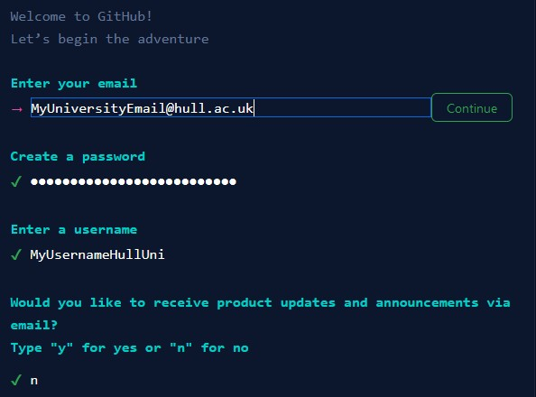

The following section will discuss creating a GitHub account, navigating the UI and setting up GitHub desktop.
If you have already created an account on GitHub and feel like you are familiar with the GitHub UI you may skip the next section. I would, however, follow along with the guide on how to effectively setup and use GitHub desktop to ensure that everything will work correctly throughout the rest of the tutorials.
Before you can begin to use GitHub features you must first create an account, to do this follow the steps shown below.
Navigate to https://github.com/
Step Two: Navigate to the “sign up” button, located on the top right-hand side of the screen.
Follow the sign-up step-by-step sign-up process that is provided by the website.
It is important as this point that you sign up using your University E-Mail. This will ensure that all your university work is accessible in a place that is easy for you to locate and will be recoverable if you forget your account details.
A completed sign-up form should look something like this.
Complete the CAPATCHA at the bottom of the page and press create account to complete the sign-up process.
The final step in the account creation process is to verify your account. The GitHub website will ask you for something called a “launch code” that will be used for this.
Navigate to your e-mail and you should have received a message from GitHub (it may show in the “Other” section of your e-mails).
Complete the steps covered in the e-mail and your account set up should be complete. You will now be able to log in if GitHub does not automatically redirect you.